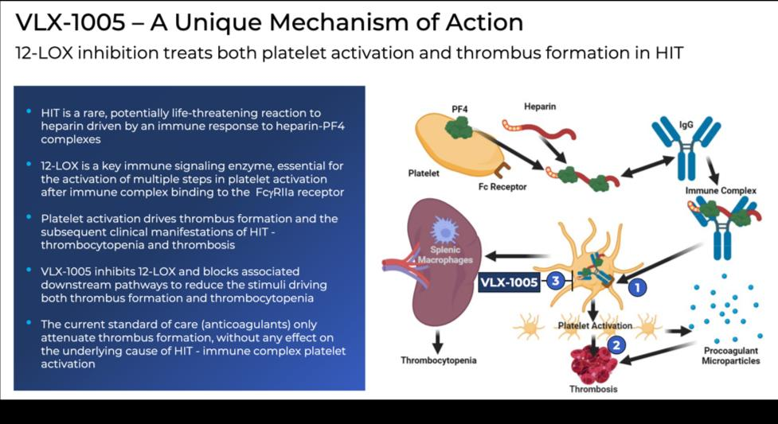
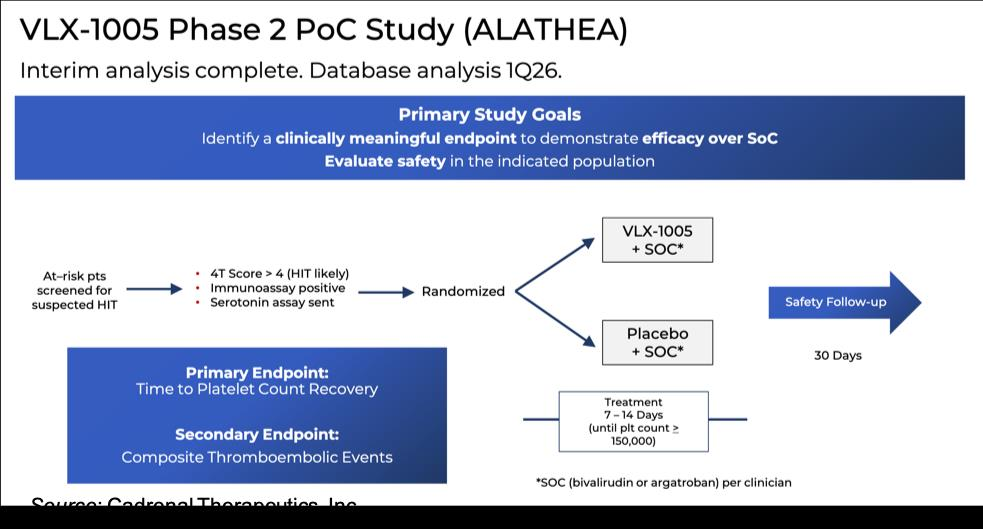
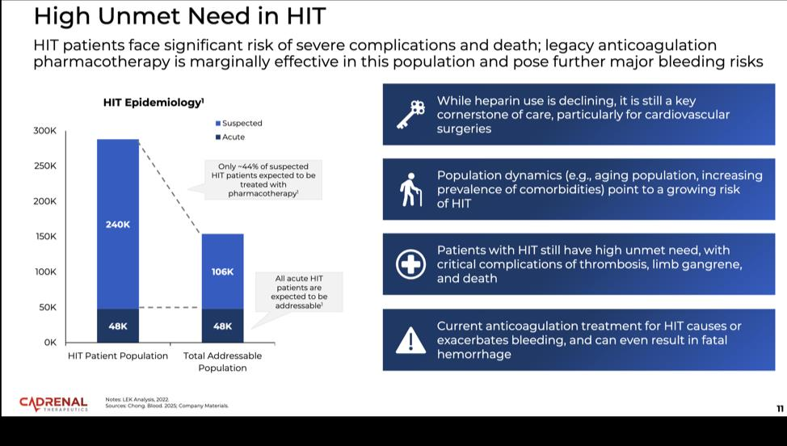

Latest News
Press Release
Cadrenal Therapeutics Announces End-of-Phase 2 Meeting with the FDA and Pivotal Phase 3 Registration Path for CAD-1005 in Heparin-Induced Thrombocytopenia (HIT)
3 months ago
Press Release
Cadrenal Therapeutics Announces Phase 2 Results with Encouraging Reductions in Thrombotic Events for CAD-1005
5 months ago
Analyst
Cadrenal's Quiet Expansion Play Is Starting to Get Loud
7 months ago
Analyst
Cadrenal's Anticoagulation Platform Is Expanding in a $40 Billion Market
7 months ago
*Sponsored
August 8, 2026
15 min read
Stockverse: Cadrenal Therapeutics Inc. (NASDAQ: CVKD)
Hello Readers,
9 catalysts are stacking up on a Nasdaq biotech (CVKD) that most traders haven't discovered yet, and the setup is getting harder to ignore.
The company holds breakthrough Factor XIa inhibitors , the same drug class that multiple Big Pharma companies are racing to dominate, plus a Phase 3-ready cardiovascular drug targeting populations with zero treatment alternatives .
In December 2025, the company announced a major pipeline expansion with the acquisition of CAD-1005 (formerly VLX-1005), a first-in-class Phase 2 drug for Heparin-Induced Thrombocytopenia that already has Orphan Drug and Fast Track designations from the FDA. Phase 2 results showed a greater than 25% absolute reduction in thrombotic events versus placebo, and the company has now successfully completed its End-of-Phase 2 meeting with the FDA, receiving guidance on a pivotal Phase 3 registration trial.
Zacks Small Cap Research published a new report valuing CVKD at $25 per share after incorporating CAD-1005 into its model — more than 300% upside from recent levels.
Source: Zacks Small Cap Research Report
Now add a low float of fewer than two million shares, and you'll see exactly why this profile has climbed to the top of my watchlist.
If you're looking for an under-the-radar biotech with meaningful catalysts lining up, this one demands immediate attention:
Cadrenal Therapeutics, Inc. (Nasdaq: CVKD)
Cadrenal Therapeutics is a biopharmaceutical company developing therapeutics to address serious gaps in anticoagulation therapy. The company's lead asset, tecarfarin, is an investigational oral vitamin K antagonist designed for patients who face higher risks when using warfarin, including those with implanted cardiac devices or severe kidney conditions.
Tecarfarin is engineered to provide more predictable anticoagulation and reduce risks associated with stroke, heart attack, clot formation, and treatment volatility. Its unique metabolic design allows it to bypass many of the complications that limit the effectiveness of traditional warfarin.
And based on multiple catalysts now taking shape, CVKD has secured a top position on my watchlist.
Here are the key catalysts coming into focus:
- FDA End-of-Phase 2 meeting completed with guidance on a pivotal Phase 3 registration trial for CAD-1005 in HIT
- Phase 2 results showing greater than 25% reduction in thrombotic events
- A Zacks $25 valuation representing over 300% upside
- A first-in-class HIT drug acquisition with Orphan Drug and Fast Track FDA designations
- A low float that creates an environment of elevated volatility potential
- A pipeline expanding acquisition that adds major Factor XIa inhibitors
- Clinical trial initiation plans for a high risk ESKD population
- A new high profile board appointment strengthening clinical leadership
- Frunexian as the only IV small-molecule FXIa inhibitor designed for acute hospital use
Company Breakdown: Cadrenal Therapeutics, Inc. (Nasdaq: CVKD)
Cadrenal is a late stage cardiovascular drug developer focused on advancing tecarfarin, a novel vitamin K antagonist designed as a safer and more stable alternative to warfarin. The company is specifically targeting patient populations that currently have no reliable anticoagulation options beyond warfarin, despite significant risks.
Warfarin remains difficult to manage because of drug interactions, genetic variability, kidney involvement, and frequent dose adjustments. Many patients remain outside the therapeutic range, which increases the likelihood of heart attack, stroke, bleeding, and death.
Company Overview Video
Why Tecarfarin Could Be a Game Changer
Tecarfarin has a Phase 3 ready profile supported by extensive clinical data. Studies show potential improvements in anticoagulation stability, including increased time in therapeutic range. This is a critical measure because stability is strongly correlated with reduced adverse events.
Key distinctions include:- Orphan drug designation for LVAD patients
- Orphan drug designation and fast track status for ESKD patients with AFib
- A metabolic pathway primarily outside the CYP450 system, reducing drug interaction risks
- Reduced susceptibility to drug interactions and kidney impairment
Tecarfarin is also being developed for patients with mechanical heart valves who struggle with warfarin due to genetic resistance, kidney dysfunction, or polypharmacy issues.
Because tecarfarin is the only next generation VKA being developed for these specific populations, Cadrenal is aiming to redefine standards of care in areas where therapeutic options have not progressed for decades.
Pipeline Expansion: Factor XIa and Frunexian
Cadrenal's acquisition of assets from eXIthera added significant depth to its anticoagulation pipeline. These assets include frunexian, a first in class IV Factor XIa inhibitor, and EP 7327, an oral Factor XIa inhibitor in development for major thrombotic indications.
Factor XIa has emerged as one of the most validated targets in cardiovascular drug development. It plays a limited role in normal clotting but a major role in pathological thrombosis. This makes FXIa inhibition a promising strategy for reducing clot formation while maintaining lower bleeding risk.
Large pharmaceutical companies have invested billions into this space, underscoring its long term commercial and scientific potential.
Frunexian Clinical Data
Frunexian is currently the only intravenous small molecule Factor XIa inhibitor in active development for acute use cases. Two Phase 1 clinical studies produced strong results with frunexian well tolerated at all tested levels. aPTT increased in a dose proportional manner, PT remained unchanged confirming target specificity, and Factor XIa activity decreased consistently with dose.
The clinical data shows frunexian works exactly as designed. Higher doses create stronger anticoagulation effects that can be turned on and off rapidly. Most importantly, Phase 1 trials in humans showed no serious adverse events at any dose level tested, which has been the biggest challenge in anticoagulation drug development.
This gives Cadrenal a drug that hospitals can use during critical procedures like heart surgeries and catheter placements where precise, fast-acting blood thinning control is essential. Big Pharma has spent billions trying to develop drugs with this profile. Cadrenal acquired one that has already demonstrated favorable safety and activity in human trials and shown the exact pharmacological characteristics that make it commercially valuable.
The latest Zacks research report highlighted the competitive landscape for Factor XIa inhibitors, confirming that multiple major pharmaceutical companies all have active programs in this space. Frunexian stands apart as the only IV small-molecule FXIa inhibitor designed for rapid on/off acute hospital use, occupying a differentiated niche that the larger players are not targeting.

Factor XIa Inhibitor Competitive Landscape — Frunexian is the only IV small-molecule FXIa inhibitor in development for acute care settings.
Source: Cadrenal Therapeutics, Inc.
CVKD Potential Catalyst #1: FDA End-of-Phase 2 Meeting Completed — Pivotal Phase 3 Registration Path Defined for CAD-1005 in HIT
On April 30, 2026, Cadrenal Therapeutics announced that it hassp successfully completed its End-of-Phase 2 meeting with the FDA and received guidance on key elements of the Phase 3 pivotal trial for CAD-1005 in heparin-induced thrombocytopenia (HIT).
The FDA provided critical guidance on protocol design, study population, dosing, background therapy, exposure, the safety database, and the primary endpoint of new or worsening thrombotic events.
Based on FDA feedback, Cadrenal plans to advance directly to a randomized, blinded, placebo-controlled Phase 3 study evaluating CAD-1005 added to the current standard of care for patients with HIT. This will be the first randomized, blinded, placebo-controlled registration trial in HIT.
Planned Phase 3 HIT Trial Design:- Approximately 120 patients across up to 50 clinical centers worldwide
- Patients with suspected HIT randomized to CAD-1005 or placebo on top of standard-of-care anticoagulation
- Treatment for up to 14 days days during hospitalization
- Primary endpoint: incidence of new or worsening thrombotic events in SRA-confirmed HIT patients, centrally adjudicated
- At least one planned interim analysis
- Projected NDA submission in 2029 adding Factor XIa assets
“Building on our Phase 2 experience with CAD-1005 in HIT and now with FDA guidance for Phase 3, Cadrenal is positioned to pursue a pivotal trial for the first new therapy for HIT in more than two decades,” said Quang X. Pham, Chairman and CEO of Cadrenal Therapeutics. “Interrupting the vicious cycle of platelet activation in HIT with CAD-1005 could be an important addition to our therapeutic armamentarium for this devastating condition,” said James Ferguson, M.D., Chief Medical Officer of Cadrenal Therapeutics.
What This Means For Investors: This is a major regulatory milestone. The FDA has now provided direct guidance on the Phase 3 trial design, confirming that the thrombotic events endpoint from the Phase 2 study is the path forward for registration. Cadrenal has a clear roadmap to a pivotal trial, a projected NDA submission in 2029, and the regulatory designations (Orphan Drug, Fast Track) to accelerate that timeline. CAD-1005 remains the only 12-LOX inhibitor in clinical development worldwide and the only treatment targeting the underlying immune drivers of HIT.
CVKD Potential Catalyst #2: Phase 2 Results Show Encouraging Reduction in Thrombotic Events
On February 24, 2026, Cadrenal Therapeutics announced results from a Phase 2 trial evaluating CAD-1005 in patients with heparin-induced thrombocytopenia (HIT). The randomized, blinded, placebo-controlled trial showed a greater than 25% absolute reduction in thrombotic events in the CAD-1005 treatment arm compared to placebo, with both groups receiving standard anticoagulant therapy.
This is the only blinded, placebo-controlled trial ever conducted in HIT.
The placebo group experienced a thrombotic event rate exceeding 75%, while the CAD-1005 group experienced a 50% event rate — demonstrating that adding a 12-LOX inhibitor to standard anticoagulants may be more effective than anticoagulants alone in preventing thrombotic events.
The study's primary endpoint was platelet count recovery rate, which the previous sponsor selected to validate a new surrogate endpoint. That primary endpoint was not met — platelet recovery rates were similar between both groups. However, Cadrenal notes that thrombotic events continued to occur even after platelet count recovery, suggesting platelet recovery is not an appropriate surrogate marker for clinical efficacy in HIT
The key secondary endpoint — incidence of new or worsening thrombotic events including radiologic progression — showed the encouraging reduction that supports further development.
The final dataset included 24 patients with presumptive HIT diagnosis, with primary analyses focused on 17 patients confirmed by central lab functional assay. All patients received concomitant standard anticoagulant therapy (argatroban or bivalirudin).
What This Means For Investors: This is the first clinical evidence in a controlled trial that directly targeting the immune mechanism driving HIT with a 12-LOX inhibitor can reduce thrombotic events beyond what standard anticoagulation alone achieves. The FDA has already granted the End-of-Phase 2 meeting, which means the regulatory path toward a pivotal Phase 3 registration trial is actively moving forward. Combined with Orphan Drug and Fast Track designations, CAD-1005 is now positioned as the most advanced first-in-class therapy targeting the root cause of HIT.
CVKD Potential Catalyst #3: Zacks Research Report Values CVKD at $25 Per Share
Zacks Small Cap Research published a report on Cadrenal Therapeutics on February 20, 2026, authored by analyst David Bautz, PhD. The firm incorporated VLX-1005 into its probability-adjusted discounted cash flow model and arrived at a $25 per share valuation — representing more than 300% upside from recent levels.
The analyst noted that VLX-1005 is expected to be the main focus for Cadrenal going forward, as it is ready for Phase 3 testing and directly targets the pathological drivers of HIT where few effective treatment options currently exist. The report confirmed that Cadrenal is planning an End-of-Phase 2 meeting with the FDA to discuss Phase 3 trial design, endpoints, and patient enrollment parameters.
Zacks modeled estimated costs for the Phase 3 program and projected share counts increasing to 5.0 million shares in 2026 and 7.0 million shares in 2027 as the company raises capital to fund development. Even with that dilution factored in, the valuation still lands at $25 per share. That speaks directly to the scale of the market opportunity the firm sees in VLX-1005 for HIT.
Zacks also reported that Cadrenal had approximately $3.9 million in cash as of September 30, 2025 with approximately 2.1 million shares outstanding and a fully diluted count of approximately 3.1 million when factoring in options and warrants.
Source: Zech Small Research Report
CVKD Potential Catalyst #4: CAD-1005 Acquisition Adds a First-in-Class HIT Treatment with FDA Designations
Cadrenal announced the acquisition of CAD-1005 (formerly VLX-1005) and related 12-lipoxygenase assets from Veralox Therapeutics. This acquisition immediately strengthens the pipeline with a late-stage,first-in-class drug candidate that has already secured both Orphan Drug Designation and Fast Track status from the FDA, as well as orphan drug status from the European Medicines Agency.
CAD-1005 is a novel inhibitor of 12-LOX, targeting a key immune signaling pathway that drives Heparin-Induced Thrombocytopenia (HIT). HIT is a potentially life-threatening complication that can occur in patients exposed to heparin, the most widely used parenteral anticoagulant. According to the latest Zacks research, approximately 240,000 patients in the U.S. are screened annually for suspected HIT, with approximately 48,000 confirmed diagnoses each year.
The critical distinction here is that CAD-1005 does not simply thin the blood like existing HIT treatments. It targets the actual immune-driven platelet activation that causes the disease in the first place.
Current standard-of-care drugs like argatroban and bivalirudin only address coagulation downstream, leaving the core immune-mediated platelet activation unchecked. That means patients remain at persistent risk of thrombosis, bleeding, amputation, and death even while on treatment. There are currently zero approved therapies that target the immune-mediated platelet activation pathway in HIT. This is the gap CAD-1005 is designed to fill.
CAD-1005 works by selectively inhibiting 12-LOX, an enzyme that amplifies platelet activation through a lipid signaling molecule called 12-HETE. By blocking this amplification step, CAD-1005 targets the disease mechanism itself rather than just managing symptoms downstream.
Importantly, preclinical and clinical data show no increased bleeding signal with CAD-1005. This distinguishes it from every anticoagulant currently used to treat HIT, where bleeding complications are a major source of additional morbidity and mortality.

VLX-1005 Mechanism of Action — 12-LOX inhibition treats both platelet activation and thrombus formation in HIT.
Source: Cadrenal Therapeutics, Inc.
Clinical data across multiple studies:
Two Phase 1 studies in healthy volunteers demonstrated that CAD-1005 was well tolerated, with no deaths, no serious adverse events, and no trend in adverse event reporting with increasing doses. Pharmacokinetic data showed dose-linear increases, and a separate drug-drug interaction study with argatroban confirmed no evidence of interaction, which is critical because CAD-1005 is designed to be used alongside standard-of-care anticoagulation.
The Phase 2 proof-of-concept study (ALATHEA) evaluated CAD-1005 in patients with suspected HIT. Results announced on February 24, 2026 showed a greater than 25% absolute reduction in thrombotic event sversus placebo. Cadrenal has been granted an End-of-Phase 2 meeting with the FDA scheduled for March 2026 to discuss Phase 3 registration trial design.

CAD-1005 Phase 2 Study Design — Proof-of-concept study complete, FDA engagement for Phase 3 planning underway.
Source: Cadrenal Therapeutics, Inc.
What This Means For Investors: Cadrenal acquired a Phase 2 asset addressing a condition with approximately 240,000 suspected cases and 48,000 confirmed cases annually in the U.S. alone according to Zacks research, within the $40 billion global anticoagulation market. There are currently zero approved therapies that target the immune-mediated platelet activation pathway in HIT, positioning CAD-1005 as a true first-in-class drug.
The regulatory designations accelerate the path forward. Orphan Drug Designation provides seven years of market exclusivity upon approval plus tax credits and reduced filing fees. Fast Track status enables more frequent FDA meetings,rolling review of the application, and potential priority review.
The deal structure is also investor-friendly. Veralox will receive milestone payments tied to clinical and regulatory achievements, plus royalties on future sales. This allows Cadrenal to preserve capital while advancing development, paying primarily as value is created.
CAD-1005 is the first and only potent, highly selective inhibitor of human 12-LOX in clinical testing. This is a novel mechanism with strong scientific rationale, positive human data, and regulatory support. Second-generation 12-LOX inhibitors are also being explored for type 1 diabetes and other immune-mediated diseases, suggesting meaningful platform expansion potential.

High Unmet Need in HIT — 240,000 suspected cases and 48,000 confirmed cases annually in the U.S. Current treatments cause or exacerbate bleeding risks.
Source: Cadrenal Therapeutics, Inc.
CVKD Potential Catalyst #5: A Low Float Could Create Heightened Volatility Potential
According to publicly available data, CVKD has roughly 1.7M shares in its float. Low float profiles are known for sharp movements when material news surfaces. With multiple catalysts on deck, including the upcoming End-of-Phase 2 FDA meeting in March 2026 and continued clinical development across the pipeline, this creates the possibility of amplified upside reactions.
CVKD Potential Catalyst #6: A Major Acquisition Strengthening the Pipeline
Cadrenal's acquisition of eXIthera's portfolio significantly broadened its anticoagulation capabilities. With both a VKA and Factor XIa inhibitors under development, Cadrenal is now one of the only companies targeting the full spectrum of cardiovascular thrombotic risk.
CVKD Potential Catalyst #7: Clinical Trial Initiation Plans Mark an Important Milestone
In August 2025, Cadrenal announced plans to initiate a tecarfarin study in ESKD patients transitioning to dialysis. This group faces some of the highest cardiovascular risks among all chronic disease populations. The initiation of this study is a pivotal step toward a registration pathway for ESKD plus AFib.
CVKD Potential Catalyst #8: A High Level Board Appointment Strengthens Clinical Leadership
Cadrenal announced that Dr. Lee Scott Golden, M.D., has joined its Board of Directors as an independent member. Dr. Golden currently serves as Executive Vice President and Chief Medical Officer at PTC Therapeutics and brings more than twenty five years of experience across rare disease, cardiovascular medicine, and late stage drug development.
His background includes senior roles at Pfizer, Actelion, Eisai, and multiple cardiovascular focused companies. Dr. Golden's expertise aligns directly with Cadrenal's development strategy, adding significant value as the company prepares for critical Phase 3 activities and regulatory interactions.
CVKD Potential Catalyst #9: Frunexian as the Only IV Small-Molecule FXIa Inhibitor Designed for Acute Hospital Use
Frunexian occupies a unique position in the Factor XIa landscape. While multiple major pharmaceutical companies all have FXIa programs in development, none of them are developing an intravenous small molecule designed for rapid on/off acute hospital use. Frunexian is the only one. With a short half-life of approximately 45 minutes, it can be turned on and off quickly during procedures, unlike IV monoclonal antibodies targeting FXI/FXIa which have half-lives measured in weeks. This gives Cadrenal a differentiated asset targeting a high-value niche in cardiopulmonary bypass, catheter thrombosis,and other device-associated settings where rapid-onset, rapid-offset anticoagulation is critical.
CVKD Recap: Eight Potential Breakout Catalysts
- FDA End-of-Phase 2 meeting completed with guidance on a pivotal Phase 3 registration trial for CAD-1005 in HIT
- Phase 2 results showing greater than 25% reduction in thrombotic events
- A Zacks $25 valuation based on VLX-1005 representing over 300% upside
- A first-in-class HIT drug with Orphan Drug and Fast Track FDA designations plus EMA orphan drug status
- A low float that creates significant volatility potential
- A pipeline expanding acquisition adding Factor XIa assets
- Upcoming clinical trial initiation in ESKD
- A high impact board appointment strengthening clinical leadership
- Frunexian as the only IV small-molecule FXIa inhibitor designed for acute hospital use
Check Your Online Brokerage For The
Latest News on CVKD
MASTER LEGAL DISCLAIMER
Last Updated: Apr 30, 2026
Publisher: Relqo Media LLC (Wyoming, United States)
Subject Company: Cadrenal Therapeutics, Inc. (CVKD)
IMPORTANT SUMMARY — PLEASE READ FIRST
This website and any affiliated digital materials are published by Relqo Media LLC, a Wyoming marketing agency that has been compensated in cash by Penzance LLC to produce and distribute promotional content regarding Cadrenal Therapeutics, Inc. (NASDAQ: CVKD). This communication is a paid advertisement, not a research report, not investment advice, and not an independent publication. Relqo Media is not a broker-dealer, investment adviser, or securities analyst. Investing in small-cap or microcap securities is extremely speculative and may result in the total loss of your investment. We strongly urge all viewers to consult a licensed investment professional and perform their own due diligence.
1. NATURE AND INTENT OF THIS COMMUNICATION
Relqo Media LLC is a for-profit marketing agency engaged in paid promotions of public companies. The content we produce is strictly commercial and intended to create temporary public awareness, visibility, and short-term market activity around the featured company. This material is not impartial. All readers should interpret our content as a paid commercial advertisement and not as an editorial, research article, or independent commentary. We create advertisements, not analysis. These Communications are not intended to be factual evaluations of the company’s operations or investment merit.
2. COMPENSATION FOR CADRENAL THERAPEUTICS, INC. (CVKD)
Relqo Media LLC ("Relqo Media") has been engaged by Penzance LLC to provide promotional media and digital investor awareness services with respect to Cadrenal Therapeutics, Inc. (NASDAQ: CVKD). The following details outline the nature, scope, and financial terms of this engagement:
- Relqo Media received cash compensation of $25,000 for a 5 day campaign covering April 27th , 2026, through May 1st 2026.
- Relqo Media received cash compensation of $25,000 for a 5 day campaign covering March 9th , 2026, through March 13th 2026.
- Relqo Media received cash compensation of $25,000 for a 4 day campaign covering March 1st , 2026, through March 5th 2026.
- Relqo Media received cash compensation of $25,000 for a 5 day campaign covering February 23rd , 2026, through february 28th 2026.
- Relqo Media received cash compensation of $25,000 for a 5 day campaign covering February 18th , 2026, through february 23rd 2026.
- Relqo Media received cash compensation of $25,000 for a 6 day campaign covering January 25th , 2026, through January 30th 2026.
- Relqo Media received cash compensation of $25,000 for a 7 day campaign covering January 12, 2026, through January 19, 2026.
- Relqo Media received cash compensation of $25,000 for a campaign covering December 10, 2025, through December 17, 2025.
- Relqo Media received cash compensation of $25,000 for a campaign covering December 2, 2025, through December 10, 2025.
- Relqo Media continued to receive cash compensation on a week to week basis at a rate of $25,000 per week, paid weekly, from July 26, 2025, through September 9, 2025, resulting in aggregate additional compensation of $150,000.
- Relqo Media received additional cash compensation at the same weekly rate of $25,000 per week, paid weekly, covering the period from June 26, 2025, through July 26, 2025, resulting in aggregate compensation of $100,000.
- Relqo Media received cash compensation from Penzance LLC for digital investor awareness and promotional services at a rate of $25,000 per week, paid weekly, beginning January 1, 2025, through July 1, 2025, resulting in aggregate compensation of $650,000 during that period.
- Total Compensation: As of January 19, 2026, Relqo Media has received cumulative cash compensation of $975,000 from Penzance LLC for services rendered in connection with CVKD.
- Future Compensation: This engagement continues on an open ended basis at a rate of $25,000 per week, paid weekly, until terminated by either party. Accordingly, Relqo Media will continue to receive compensation at this rate beyond January 19, 2026, unless and until such agreement is terminated or modified in writing.
- Nature of Services: Relqo Media's services include, but are not limited to, creating, publishing, and distributing digital media, promotional articles, newsletters, websites, investor awareness content, social media campaigns, email/SMS marketing, and other investor-focused communications designed to raise awareness of CVKD among retail and institutional investors.
- Conflict of Interest Statement: Because Relqo Media has been, and will continue to be, compensated directly by Penzance LLC for its services, this relationship represents a material conflict of interest. Relqo Media's communications regarding CVKD, including but not limited to newsletters, articles, press releases, advertisements, websites, emails, SMS alerts, and social media posts, should be understood as paid advertisements that are inherently biased.
- Securities Ownership Disclosure: Penzance LLC and/or its affiliates, officers, directors, or associated individuals may own, acquire, or dispose of securities of Cadrenal Therapeutics, Inc. before, during, or after the campaign period. This means that while Relqo Media is being compensated to promote CVKD, the entities paying for such services may simultaneously engage in securities transactions involving CVKD stock, which could result in gains or losses to those parties independent of Relqo Media's activities.
- Investor Warning: All readers, investors, and market participants should assume that any and all promotional communications disseminated by Relqo Media regarding CVKD are issued for the purpose of increasing investor awareness and may have the effect of increasing trading volume and/or the market price of CVKD's securities. Investors are strongly cautioned to conduct their own independent research, due diligence, and analysis of CVKD, including review of all filings made with the Securities and Exchange Commission (SEC), prior to making any investment decision.
This relationship creates a material conflict of interest. All content distributed by Relqo Media LLC regarding CVKD should be viewed as promotional, financially motivated, and inherently biased.
3. INTENDED AUDIENCE
These Communications are directed solely to U.S.-based, self-directed investors who understand the risks of investing in microcap and Nasdaq-listed securities. The content is not intended for children, seniors, retirement accounts, or individuals with limited experience in securities trading. These Communications are not intended to guide investment for long-term portfolio management or financial planning purposes.
4. NO ENDORSEMENT OR VERIFICATION OF COMPANY CLAIMS
Relqo Media LLC does not, and has not, independently verified, investigated, audited, or substantiated any statements, representations, or claims made by the featured company, its officers, directors, employees, affiliates, agents, press releases, marketing materials, or any third-party sources.
Any and all information regarding Cadrenal Therapeutics, Inc. (NASDAQ: CVKD)—including but not limited to business descriptions, operational updates, clinical trial progress, scientific data, partnerships, revenue projections, market opportunity estimates, or strategic plans—should be assumed to be unverified, unaudited, incomplete, potentially inaccurate, and subject to change without notice.
We make no warranties or representations as to the truthfulness, accuracy, reliability, or completeness of such information, and you should not interpret our publication of these statements as an endorsement or confirmation of their validity.
You should not rely on any company-provided claims, projections, or forward-looking statements for the purpose of making an investment decision. All such statements may be speculative, overstated, selectively presented, or based on assumptions that may never materialize.
If you choose to invest, you do so entirely at your own risk, and you should conduct thorough, independent due diligence—including reviewing SEC filings, consulting licensed investment professionals, and obtaining independent verification of any material facts—before making any investment decision.
5. MARKET INFLUENCE AND TRADING PATTERN EXPECTATION
Historically, promotional campaigns for microcap and small-cap securities—particularly those driven by paid advertising—often cause temporary, artificial, and unsustainable increases in share price and trading volume. These movements are typically fueled by short-term speculative interest, promotional circulation, algorithmic trading activity, and momentum-based retail buying rather than any change in the underlying business, operations, or financial condition of the company.
You should assume and expect that:
- CVKD’s share price may experience sharp, rapid, and potentially extreme increases during the period of active promotion;
- Trading volume may spike dramatically due to speculative buying pressure, news catalysts amplified by promotional activity, and social media or online forum chatter;
- Once buying interest subsides, selling begins, or the promotion ends—which may occur suddenly and without notice—the share price may decline precipitously, potentially returning to pre-promotion levels or lower, often within days or even hours; and
- These price and volume movements are not reflective of intrinsic value and may have no correlation to the company’s actual fundamentals or long-term business prospects.
Past market behavior shows that such promotional price spikes are frequently followed by steep losses, which can be rapid and irreversible. If you purchase shares during or shortly after a promotional period, you should be prepared for the high probability of losing a substantial portion, or all, of your investment.
By engaging with our content, you acknowledge and agree that you fully understand the speculative, volatile, and high-risk nature of securities subject to promotional activity, and you will not hold Relqo Media LLC responsible for any losses resulting from such trading patterns.
6. NO RELIANCE – INVESTOR RESPONSIBILITY
The burden of research, verification, and risk assessment rests entirely with you, the reader. All content produced and distributed by Relqo Media LLC is promotional in nature and should not be the basis for any investment decision. We are not responsible for your interpretation or use of the information contained herein.
You are solely responsible for:
- Reviewing and analyzing all publicly available information, including but not limited to SEC filings, audited financial statements, and official company disclosures;
- Consulting with a licensed, qualified investment professional, attorney, or tax adviser before making any investment decision;
- Understanding and accepting the risks inherent in microcap and early-stage public companies, which may include extreme volatility, illiquidity, lack of financial transparency, insider selling, share dilution, regulatory challenges, and business failure.
We make no warranties or representations as to the accuracy, completeness, timeliness, or reliability of any information presented. Any data, figures, or statements regarding the featured company’s business, market opportunity, future performance, or partnerships may be incomplete, outdated, or incorrect. You should assume that certain information is based on third-party sources we have not independently verified.
By viewing our materials, you agree that:
- You will not rely solely on our communications in making an investment decision;
- You accept full responsibility for conducting independent due diligence; and
- Relqo Media LLC and its affiliates will not be liable for any losses or damages arising from your reliance on our content.
7. FORWARD-LOOKING STATEMENTS, ASSUMPTIONS, AND ACCURACY NOTICE
Our materials may include “forward-looking statements” within the meaning of the Private Securities Litigation Reform Act of 1995, as well as other predictive or aspirational language regarding future events, performance, or results. Words such as “anticipates,” “expects,” “intends,” “plans,” “believes,” “may,” “will,” “should,” “could,” “projects,” “estimates,” “potential,” and similar expressions are intended to identify such statements. These statements are inherently uncertain, based on current expectations, estimates, and assumptions that may prove to be incorrect, incomplete, or no longer applicable at the time you read them.
Forward-looking statements involve known and unknown risks, uncertainties, and other factors that may cause actual results, performance, or achievements to differ materially from those expressed or implied. Such factors include, but are not limited to: changes in market conditions, regulatory decisions, the outcome of clinical trials, competitive pressures, the availability of financing, and broader economic or geopolitical developments.
Additionally, some information presented in our content is derived from third-party sources, company press releases, or statements from officers, directors, or affiliates of the featured company. We do not independently verify or guarantee the accuracy, completeness, or timeliness of such information. Any claim, projection, or forward-looking statement should be considered purely speculative and potentially outdated..
You should not place undue reliance on forward-looking statements or assume that they will prove to be accurate. Relqo Media LLC undertakes no obligation to update or revise any forward-looking statements to reflect subsequent events, changes in circumstances, or the emergence of new information, except as required by law.
8. INFORMATION SOURCING, BIAS, AND ACCURACY
We use publicly available information including company websites, press releases, and promotional materials supplied by paying clients or related parties. We do not verify or validate this data.
Assume all information presented by Relqo Media is:
- Subjective,
- Not independently verified,
- Created to highlight potential upside and omit downsides,
- Not suitable as the basis for any investment decision.
9. OWNERSHIP AND TRADING CONFLICTS
Relqo Media LLC, its contractors, members, and affiliates may hold or acquire shares in the companies we promote, including CVKD. We may buy or sell such shares without prior notice. These transactions may occur before, during, or after a promotional campaign and may affect market pricing. We are not obligated to update readers on our trading activity or affiliate holdings.
10. MARKETING TOOLS, DATA COLLECTION, AND USER CONSENT
We use a range of outreach and promotional tools, including:
- Email and newsletter distributions,
- SMS/MMS text campaigns,
- Social media posts and influencers,
- Google and native display ads,
- Press releases, video marketing, and paid content distribution.
By engaging with our content, you consent to receive ongoing marketing communications. You may unsubscribe, but your data may be retained for audit or compliance purposes. Please refer to our Privacy Policy for further details.
11. ADVERTISING LAW COMPLIANCE
Relqo Media LLC produces promotional content in accordance with the advertising disclosure standards set forth by the Federal Trade Commission (FTC) and the SEC’s interpretations of sponsored investment-related communications.
We make good-faith efforts to disclose all:
- Compensation arrangements,
- Conflicts of interest,
- Risks,
- Limitations of our role, and
- The promotional nature of this content.
We do not provide investment recommendations under any regulatory framework including, but not limited to, SEC Regulation Analyst Certification, FINRA Rule 2210, or Regulation Best Interest.
12. NON-U.S. USERS
This material is intended solely for distribution within the United States. If you are accessing this site from outside the U.S., you are responsible for complying with your country’s laws. Relqo Media disclaims liability for access from non-U.S. jurisdictions where investor promotion, marketing, or solicitation of securities is restricted or prohibited.
13. DISCLAIMER OF WARRANTIES AND LIMITATION OF LIABILITY
All content is provided “as-is” and without warranties of any kind, either express or implied. Relqo Media LLC disclaims any and all liability for:
- Investment losses,
- Inaccuracies,
- Technical delays,
- User misunderstandings,
- Omissions or errors in content.
Total liability for any claim shall not exceed one hundred dollars ($100).
14. LEGAL GOVERNANCE AND DISPUTE RESOLUTION
All matters arising out of this disclaimer shall be governed by the laws of the State of Wyoming. You agree that any dispute shall be resolved exclusively through binding arbitration under the rules of the American Arbitration Association, to be held in Sheridan County, Wyoming. Class action claims and group arbitration are expressly prohibited.
15. NON-SOLICITATION AND GEOGRAPHIC LIMITATIONS
Nothing in our content constitutes a general solicitation or a personal securities recommendation. If you reside in a jurisdiction where such communications are unlawful, you must exit this site and discontinue engagement with our content.
16. FINAL NOTICE – ACCEPTANCE OF TERMS
We reserve the right to update this Disclaimer at any time without notice. Your continued use of our services or content constitutes acceptance of the most recent version.
If you do not accept all terms of this disclaimer in full, you must:
- Exit our websites,
- Unsubscribe from our communications,
- Discontinue viewing all Relqo Media promotional content.
17. NO RELIANCE
By viewing or engaging with this content, you agree that:
- You will not rely on any statements made by Relqo Media for investment purposes,
- You waive any claim that our content was a material factor in your investment decision,
- You have read, understood, and accepted this disclaimer in full.
© 2024 Relqo Media LLC. All Rights Reserved.
Legal Contact: 📧 support@topstocks.com
Mailing Address: 1309 Coffeen Ave Ste 1200, Sheridan, WY 82801
Affiliate Disclosure: Relqo Media LLC owns and operates TopStocks.com and all affiliated digital properties.